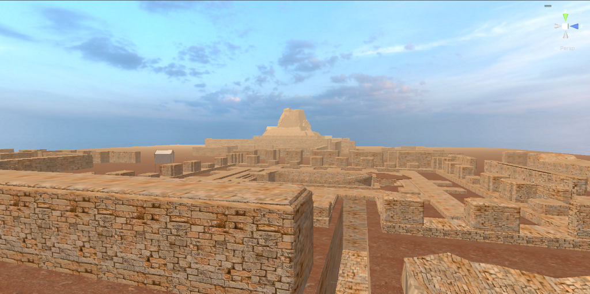
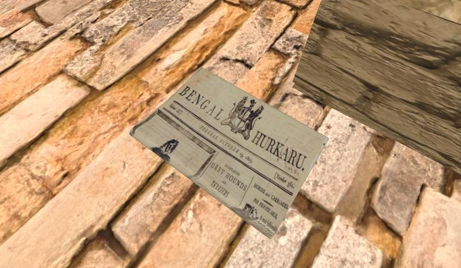
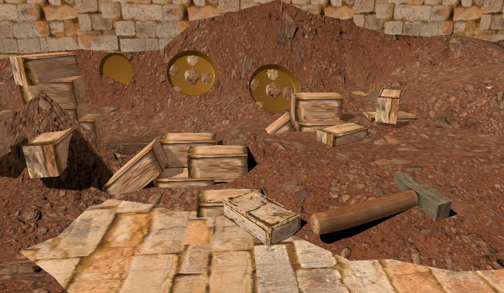
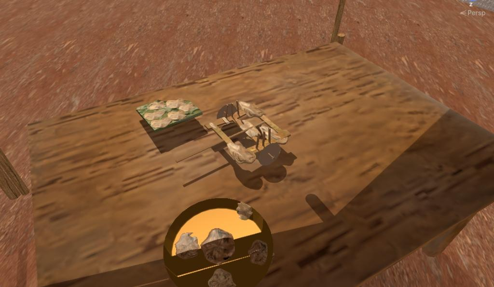
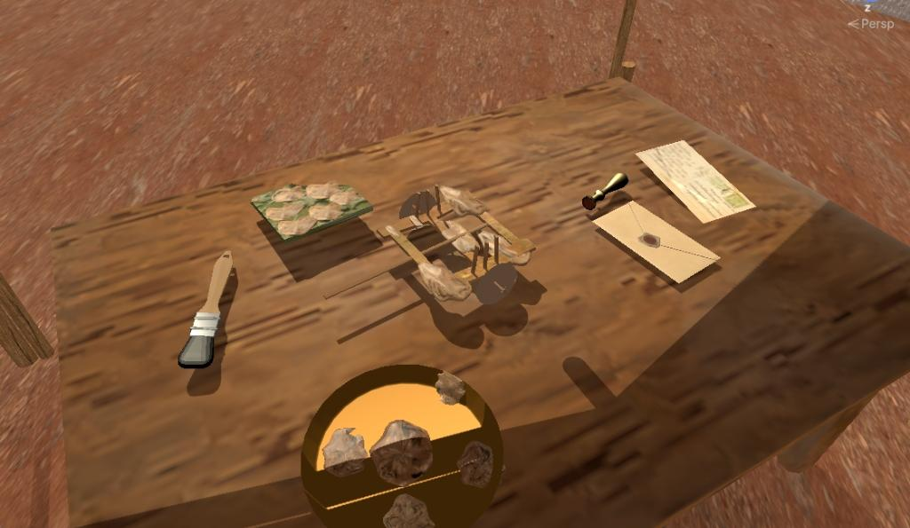
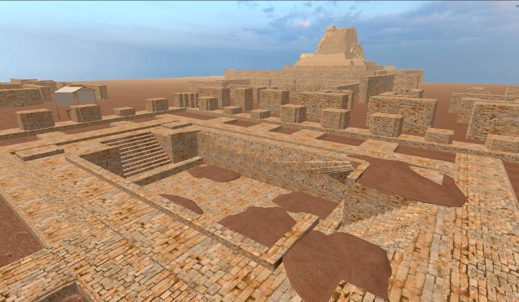

VR Mohenjo Daro

"Reconstructed 3D environment of Mohenjo-daro in Unity"
View Prototype WalkthroughPROJECT DETAILS
Project Type: VR Narrative Experience
Role: Interaction Designer, Narrative Designer, VR Prototyper
Duration: 3 Weeks
Platform: VR / Meta Quest
Tools: Unity, Blender, Meta XR SDK
Mode: Single Player
"A VR experience that makes colonial-era heritage destruction feel personally consequential by putting you in the hands of the person who caused it."
● Problem
Heritage loss from Mohenjo-daro feels distant and abstract. Most people don't know that ancient ruins were physically dismantled brick-by-brick to build British railway lines in the 1850s and that irreplaceable artifacts were discarded as rubble in the process.
● Goal
Design a first-person VR experience where the user unknowingly participates in that destruction then confronts the consequence. Make preservation feel urgent and personal, not just historical.
The Design Process
CORE SYSTEM IDEA
"The experience works because the player is complicit before they understand what they've done. Guilt is designed not narrated."
Design Approach
Role before context
The player acts as a colonial worker before they know the historical weight of the site. Innocence at entry is what makes the guilt land later.
Objects as narrative
Each artifact discovered — a shard, a bead, a skeletal fragment quietly reframes the space. The environment tells the story the Saheb refuses to.
Resistance as the only real choice
The player cannot fight, escape, or explain. The only form of agency is defiance: keeping the artifacts the overseer calls trash. Agency through small rebellion, not heroics.
Same hands, two centuries
The transformation is triggered by the player's own gesture dusting an artifact. Worker's hands become archaeologist's hands mid-motion. Continuity of action creates emotional continuity.
Silence over explanation
The modern site has no voiceover, no overlay text. Fences, preservation boards, and quiet replace the chaos. The contrast is the message.
Experience Flow
Scene 1 — The Worksite
ColonialAs you open your eyes, you see a newspaper from that era lying on the bricks, and the Saheb's orders ring out in your ears. Nothing else.

Scene 2 — First Discoveries
ColonialPicking up bricks, the player unearths pottery shards, tools, fragments of bone. Each time, the Saheb scolds louder. The artifacts feel wrong to discard.

Scene 3 — The Table
ColonialThe player quietly collects everything onto a workbench. The Saheb's voice fades. The objects sit together for the first time a city in fragments.

Scene 4 — The Transformation
TransitionPlayer picks up a brush, dusts one object. Mid-gesture, hands change. Railway noise dissolves to silence. The world rebuilds around the same hands.

Scene 5 — Modern Mohenjo-daro
ModernThe same site, fenced and quiet. Archaeological markers where bricks were removed. The absence of the Saheb is its own statement.

Key Decisions
First-person perspective throughout
Maximizes complicity. The player never watches themselves cause harm they are the cause. Third-person would create emotional distance that defeats the project's purpose.
No combat, no escape mechanic
Removing action verbs forces emotional attention. The only meaningful interaction is collection and defiance small, quiet, human.
Sound as the primary era marker
Colonial-era: railway noise, shouting, metal on stone. Modern era: wind, birds, silence. The transition is heard before it's seen.
Gesture-triggered time shift
The player's own action dusting causes the shift. Passive cutscenes would remove agency. The player transforms the timeline by choosing to care.
Key Learnings
01. Presence creates moral weight that passive media film, museum exhibits cannot. The body's sense of doing is what makes guilt possible in VR.
02. Limiting interaction sharpens emotional focus. When you remove the ability to fight or escape, small gestures like picking up a shard become heavy with meaning.
03. Contrast communicates time better than visual effects. Noise vs. silence. Chaos vs. stillness. The shift is experienced, not explained.
04. Heritage design is also interaction design. Deciding what a player can and cannot do with an ancient object is itself an act of preservation ethics.
REFLECTION
"This project pushed the idea that guilt is a design material — presence did more moral work in five minutes of VR than a museum placard could. Instead of narrating the loss of Mohenjo-daro, it put the player's own hands on what was destroyed."